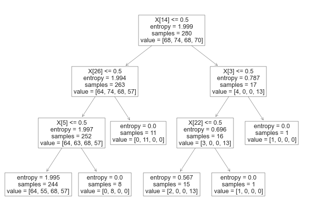

A decision tree is a machine learning algorithm that can be used for both classification and regression tasks. It is a type of model that makes predictions by learning simple decision rules from data. A decision tree can be seen as a flowchart-like structure, where each internal node represents a "test" on a feature or attribute, each branch represents the outcome of the test, and each leaf node represents a class label or a numerical value that is the result of the decision tree's prediction. Decision trees are often used in data mining and predictive analytics applications, as they are easy to interpret and can be used for both categorical and numerical data. They can also handle both continuous and discrete variables, making them very versatile.
Some common applications of decision trees include: Customer segmentation: Decision trees can be used to group customers based on their behavior, preferences, and demographics, allowing businesses to tailor their marketing and product offerings to specific customer segments. Fraud detection: Decision trees can be used to detect fraudulent transactions by identifying patterns in data that indicate fraud. Medical diagnosis: Decision trees can be used to diagnose medical conditions based on symptoms and patient history. Predictive maintenance: Decision trees can be used to predict when equipment or machinery is likely to fail, allowing maintenance teams to proactively schedule repairs and prevent downtime. Overall, decision trees are a powerful tool for making predictions based on complex data sets, and they have a wide range of applications across industries.


When building decision trees, we need a way to determine which features or attributes to split on, and which ones are the most informative for making predictions. GINI, Entropy, and Information Gain are three popular measures used to evaluate the quality of a split in a decision tree. GINI Impurity: GINI is a measure of impurity or randomness used to evaluate the quality of a binary split. It calculates the probability of misclassification if a random sample is classified according to the distribution of target classes in the split. A GINI score of 0 means that all samples in a node belong to the same class, while a score of 0.5 means that the samples are equally distributed among all classes. Entropy: Entropy is another measure of impurity or randomness used to evaluate the quality of a binary split. It calculates the amount of uncertainty or disorder in a system, which in this case, is the distribution of target classes in the split. A split with low entropy means that the target classes are mostly the same, while a split with high entropy means that the target classes are distributed more evenly. Information Gain: Information Gain is a measure of how much information is gained by splitting on a particular feature or attribute. It calculates the difference in entropy or GINI impurity between the parent node and the child nodes resulting from the split. A higher information gain means that the split is more informative and should be preferred over other splits.
- Used Clustering data: ClusterData_Twitter
Link to the dataset: Dataset
Link to the Python code: Code


The dataset include numeric values that is pollutants emissions of Carbondioxide, Methane, FGas and Nitrogen oxide with the additional column called Risk factor rated from 1 to 3 based on the emissions from the pollutants
Results


Here is a brief explanation of the arguments passed to the DecisionTreeClassifier constructor: criterion: The function to measure the quality of a split. "entropy" is a measure of impurity based on the information theory, while "gini" is a measure based on the Gini impurity. splitter: The strategy used to choose the split at each node. "random" means that random splits are tried, while "best" means that the best split is chosen. max_depth: The maximum depth of the decision tree. min_samples_split: The minimum number of samples required to split an internal node. min_samples_leaf: The minimum number of samples required to be at a leaf node. min_weight_fraction_leaf: The minimum weighted fraction of the sum total of weights (of all the input samples) required to be at a leaf node. max_features: The maximum number of features to consider when looking for the best split. random_state: The seed used by the random number generator. max_leaf_nodes: The maximum number of leaf nodes in the decision tree. min_impurity_decrease: A node will be split if this split induces a decrease of the impurity greater than or equal to this value. class_weight: Weights associated with classes in the form {class_label: weight}. By setting these arguments to specific values, the user can customize the behavior of the decision tree algorithm. Once the instance of DecisionTreeClassifier is created, it can be trained on a labeled dataset using the fit() method and used to predict the class labels of new data points using the predict() method.


It's important to note that the choice of criterion and splitter can have a significant impact on the performance of the decision tree algorithm. For example, "gini" is typically used for smaller datasets, while "entropy" may be better for larger datasets with more features. Similarly, "best" is usually a better choice than "random" for most datasets. In practice, it's often a good idea to try out different combinations of hyperparameters and evaluate their performance on a validation set before selecting the best model. The


By increasing the value of min_samples_split, the decision tree will have fewer nodes and may become less complex. This can help to avoid overfitting, especially when dealing with small datasets or noisy data. However, setting it too high may result in underfitting, where the decision tree is too simple and cannot capture the underlying patterns in the data. Therefore, it's important to carefully choose this hyperparameter based on the specific problem and the characteristics of the dataset.